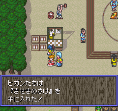
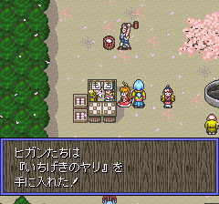
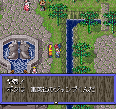

火熊国
PLGSイベントNo.1 ヒガンの誕生日イベント
・ゲーム開始時に設定した自分の誕生日に火影村のヒガンの家に行くと、ゲンコツやビンタ達から誕生日プレゼントを貰う事が出来る(リセットは不可)貰えるアイテムは以下の通り。
日の光(ゲンコツ)、体のモト(ビンタ)、あいのべんとう(女の子)、コンランのこな(女の子)
PLGSイベントNo.2 ペット育て
・火熊神社の卵屋でペットの育成が出来る。種類は全部で4種類。どれだけ長く育てられるか挑戦してみよう。各ペットの育て方と特徴は以下の通り。
カパカパ 緑の卵を購入してから45～60分経ったら孵す 体力30。
からだのエサ…体力＋5
あたまのエサ…体力＋2
こころのエサ…体力＋1
おならのエサ…体力－2
なぞのエサ…体力－5
※なぞのエサを与えると16/256の確率でまつどりに突然変異する。
ウサピノ ピンクの卵を購入してから45～60分経ったら孵す 体力60。
あたまのエサ…体力＋10
なぞのエサ…体力＋5
こころのエサ…体力＋3
からだのエサ…体力－5
おならのエサ…体力－15
※なぞのエサを与えると8/256の確率でまつどりに突然変異する。
ニンジャ 卵を購入してから45～60分以外の時間で孵す(ピンクでも緑でもどちらでも良い)。 体力96。
おならのエサ…体力＋30
なぞのエサ…体力＋10
からだのエサ…体力＋5
あたまのエサ…体力－15
こころのエサ…体力－50
※なぞのエサを与えると4/256の確率でまつどりに突然変異する。
まつどり 突然変異で他の生物が変化した姿。卵からは孵らない。 体力170。
からだのエサ…体力＋30
こころのエサ…体力＋1
なぞのエサ…体力－25
あたまのエサ…体力－50
おならのエサ…体力－100
※なぞのエサを与えると2/256の確率で他の3種類の生物のどれかに突然変異する。
※60時間以上経つと卵は腐ってしまう。
PLGSイベントNo.3 マもの育て
・スバルを仲間にした後、火熊神社の卵屋でマもの育てが出来る。育て方によって4種類のマもののどれかになるぞ。めざせ極楽チョウ！
猪鹿チョウ サナギを0分～23時間59分の間に孵す。
舌好チョウ サナギを24時間～39時間59分の間に孵す。
※エサをあたま、こころ、からだ、なぞの順に与えると、0時間0分でも舌好チョウが孵ることが判明している。
歌舞伎チョウ サナギを50時間～59時間59分の間に孵す。
※極楽チョウを育てようとして失敗すると歌舞伎チョウになりやすい。
極楽チョウ 1回目にこころのエサ、2回目にからだのエサ、3回目になぞのエサ、4回目にあたまのエサを与え、サナギを40時間～49時間59分の間に孵す。
※60時間以上経つと卵は腐ってしまう。
PLGSイベントNo.4 新装開店道具屋
・火熊神社には、外にいる店員に話しかけてから1時間後にオープンする道具屋がある。売られている道具の中には通常の半額のものも。
PLGSイベントNo.5 火立村の展望台
・午後5時～6時の間に火立村に行くと、展望台の望遠鏡から高天原を見る事が出来る。
PLGSイベントNo.6 美人洞の三美人
・火熊国と孔雀国をつなぐ美人洞は、1時間に4回誘惑の泉の色が変わる。3つの泉の色全てがピンク色に変わる45分～59分までの間にここに来れば、3美人のうち1人からアイテムが貰えるぞ(1日に1つのみ。リセットは効かない)。
PLGSイベントNo.7 三太祭り
・火熊国解放後、12月23日～25日まで火熊神社で三太祭りが開催される(三太祭りに出店するお店は100両均一屋、薬売りA、おもちゃ屋、火走りのツボ屋の4つ)。そこで貰えるアイテムは以下の通り。
三太からのプレゼント
むらさきの札、日の光、きせきのさけ、あいのくびかざり、たましいのゆびわ(1度リセットすれば1日に何個でも貰える)
PLGSイベントNo.8 節分
・火熊国解放後、2月1日～6日まで火熊神社で節分が行われる(節分に出店するお店は薬売りA、粉屋、火走りのツボ屋、首飾り屋の4つ)。そこで貰えるアイテムは以下の通り。
マメの早食い競争
0～49個…なし
50～74個…木の札
75～99個…いのちのさけ
100～124個…月の光
125～149個…てんおう丸
150個以上…きせきのさけ
縁起物
成功するとパーティ全員のイカす度が1つずつ上がる。
まきずしイベント
特に何もなし
PLGSイベントNo.9 ばれんたいん
・火熊神社のアキナと鶴見神社のももこに家を買ってあげている場合、2月14日に彼女達に会いに行く事で｢ちよこれいと｣を貰うことが出来る。
孔雀国
PLGSイベントNo.10 まりなイベント
・孔雀神社の出会い茶屋にいるまりな攻略には時間がかかる。家に住んでもらうまでに4日間連続で通い続けなければならない上に、それから全ての手編みグッズをもらうのにさらに時間を要するのだ(詳しくは｢出会い茶屋攻略｣のコーナーにて)。
PLGSイベントNo.11 自由市場
・自由市場は日によって開いている店が違う。中には日曜日にのみ特別商品を売り出す店があるぞ(詳しくは｢店｣のデータベースにて)。
PLGSイベントNo.12 正月祭り
・孔雀国解放後、1月1日～14日まで孔雀神社で正月祭りが行われる(正月祭りに出店するお店は粉屋、火走りのツボ屋、縁起物屋の3つ)。そこで貰えるアイテムは以下の通り。
お正月の振る舞いモチ クサだんご(ヒガン)、バクチ丸(スバル)、きせきのさけ(テンジン)、よつゆの衣(みずき)
※稀にモチの中にアイテムが入っている事がある(どのアイテムが誰のモチに入っているかは予め決まっている)。

↑何でそんなものがモチの中に･･･？
コマ回し大会
1回戦突破…かいふく丸
2回戦突破…月の光
3回戦突破…ドキドキの刀
PLGSイベントNo.13 お年玉
・1月1日～3日の間に孔雀神社境内にある右の塔2階で、ミコさんからお年玉5000両がもらえる(1回のみ。リセットは効かない)。
PLGSイベントNo.14 お花見
・孔雀国解放後、4月1日～12日まで孔雀神社でお花見が行われる(お花見に出店するお店は粉屋、火走りのツボ屋、団子屋、酒屋、おもちゃ屋の5つ)。桜吹雪の舞う風流なイベントで貰えるアイテムは以下の通り。
さくらモチの振る舞い カラクリのゆびわ(ヒガン)、けんじゃのぼうし(スバル)、いちげきのヤリ(テンジン)、ネコだるまのスズ(みずき)
※稀にモチの中にアイテムが入っている事がある(正月と比較すると貰えるアイテムがかなりレア。要チェックだ)。

↑テンジンの口の中はきっと血だらけに違いない。
PLGSイベントNo.15 ｢ウスのよろい｣をゲット
・孔雀神社での正月祭りやお花見、犬神神社でのお月見などのイベント終了後にお祭り広場に行くと、モチをつく際に使用したウスで作った｢ウスのよろい｣が貰える。※但しそれらの祭りに1度でも参加していることが条件。
鶴国
PLGSイベントNo.16 ウラの秘宝館
・隠れ三村の一つ、お宝村では午後8時～午前3時59分までウラの秘宝館の展示物を見ることが出来る。
PLGSイベントNo.17 2割引道具屋
・酒村の道具屋では、午後5時～8時までの間全ての商品が2割引で販売されるお得なイベントが発生する。
PLGSイベントNo.18 ひな祭り
・鶴国解放後、2月24日～3月3日まで鶴見神社でひな祭りが行われる(ひな祭りに出店するお店はおもちゃ屋、あやし物屋、指輪屋、せんす屋、薬屋Aの5つ)。
PLGSイベントNo.19 七夕祭り(8月版)
・鶴国解放後、8月7日に鶴見神社で七夕祭りが行われる(七夕祭りに出店するお店は火走りのツボ屋、10万両均一屋、指輪屋、薬売りAの5つ)。
PLGSイベントNo.20 鶴見祭り
・鶴国解放後、10月10日～23日まで鶴見神社で鶴見祭りが行われる(鶴見祭りに出店するお店は火走りのツボ屋、酒屋、縁起物屋、薬売りA、おもちゃ屋の5つ)。そこで貰えるアイテムは以下の通り。
押し出し大相撲 きせきのさけ、体のモト、技のモト
5人目の横綱に勝つと賞品ゲット。※体のモトと技のモトは1つの大会で1つずつしか貰えない。
亀国
PLGSイベントNo.21 亀岡神社の武器屋
・亀岡神社の武器屋は、時間によって売られている商品の価格が変わる。0分～19分は通常価格、20分～39分は1割引、40～59分は2割高になっている。
PLGSイベントNo.22 あたま山村の道具屋
・あたま山村の道具屋は、金曜日のみ他の日と違う商品が売られるようになっている。他ではなかなか手に入らないアイテムがあったりするので、良くチェックしてみよう。
PLGSイベントNo.23 子供の日
・亀国解放後、4月29日～5月5日まで亀岡神社で子供の日の祭りが行われる(子供の日の祭りに出店するお店は5000両均一屋、薬屋A、火走りのツボ屋、さつき屋、おもちゃ屋の5つ)。※子供の日のお祭りにも押し出し大相撲があるが、鶴見祭りの時と貰える賞品は同じ。
PLGSイベントNo.24 ゲンブ祭り
・亀国解放後、6月10日～20日まで亀岡神社でゲンブ祭りが行われる(ゲンブ祭りに出店するお店は火走りのツボ屋、5000両均一屋、指輪屋、薬屋Aの5つ)。
PLGSイベントNo.25 亀国の定期船
・亀国解放後、亀国内の町から町への移動に利用できるようになる定期船は、5分毎にその行き先を変えるようになっている。行ける場所は亀岡神社、青池村、ゲンブ城、鶴亀の渡し(亀岡神社からのみ)となっている。その詳しいダイヤは船着場で聞くことが出来るぞ。
PLGSイベントNo.26 いま仙人の居場所
・その時間帯によって、どこのほこらににいるかが変わるいま仙人。1～12分は亀岡神社の西、13～24分はあたま山村の東、25～36分はゲンブ城の南西、37～48分は海上トンネルの北、49分～0分はひらひら峠の北西に移動する。
PLGSイベントNo.27 ミツコ姫の玉手箱
・亀国クリア後のゲンブ城でミツコ姫から貰える玉手箱は、開けるまでの時間によって中に入っているアイテムが変化する。12時間未満なら｢クサだんご｣、30時間未満なら｢にじのカケラ｣、50時間未満なら｢あいのくびかざり｣、それ以上なら｢きせきのさけ｣が入手出来る。
犬神国
PLGSイベントNo.28 七夕祭り(7月版)
・犬神国解放後、7月7日に犬神神社で七夕祭りが行われる(七夕祭りに出店するお店は薬売りA、火走りのツボ屋、10万両均一屋、指輪屋の4つ)。
・また、犬神国クリア後はこの七夕祭りや縁日などでロボットバトルが遊べるようになる(しかも、今回は｢スーパーマネキングⅢ｣の使用も可能だ)。｢マ・ジン｣と｢スーパーマネキングⅢ｣のコマンドは以下の通り。
●マ・ジン コマンド
パンチ Ａ
シールド防御 Ｂ
ミサイル Ｘを押したまま下、右下、右＋Ａ
レーザー Ｘを押したまま左、左下、下、右下、右＋Ａ
●スーパーマネキングⅢ コマンド
パンチ Ａ
シールド防御 Ｂ
ミサイル Ｘを押したまま下、左下、左＋Ａ
しっぽ Ｘを押したまま下、右下、右＋Ａ
レーザー Ｘを押したまま左、左下、下、右下、右＋Ａ
PLGSイベントNo.29 お月見
・犬神国解放後、9月3日～15日まで犬神神社で月見祭りが行われる(月見祭りに出店するお店は薬売りA、火走りのツボ屋、酒屋、団子屋、粉屋の5つ)。そこで貰えるアイテムは以下の通り。
月見モチの振る舞い カツジン刀(ヒガン)、とどめの短刀(スバル)、けんじゃのぼうし(テンジン)、あいのくびかざり(みずき)
※稀にモチの中にアイテムが入っている事がある。
PLGSイベントNo.30 十五夜
・月見祭りの期間中、お祭り広場で月の満ち欠けを毎日楽しむことが出来る。15日にはちゃんと満月になるぞ。
PLGSイベントNo.31 占い屋
・大虎町の占い屋では、プレイヤーの生年月日と今日の日付から｢性格判断｣、｢しあわせのカギ｣、｢今日の運勢｣の3つを占ってくれる。無論、日付によってその内容は変わるぞ。
PLGSイベントNo.32 芸者のとっておきの芸
・夜9時～朝3時までの間、大虎町の芸者宿に、｢すなどけい｣を渡すと｢とっておきの芸｣を見せてくれる芸者が登場する。
PLGSイベントNo.33 深夜の帯ほどき
・深夜0時～朝6時までの間に芸者宿で帯ほどきゲームをやると、それまで表示されていた禁マークのモザイクが取れる。
PLGSイベントNo.34 金・砂金の為替相場
・大虎町の金相場屋では、その時その時の為替相場に応じた価格で金・砂金がお金と取引されている。高く売れる瞬間を見極めて取引しよう。
PLGSイベントNo.35 ミホへの貢ぎ物イベント
・大虎町の出会い茶屋にいるミホに家を買ってあげると、彼女はヒガンにアイテムやお金を貢ぎ物として要求してくるようになる。48時間以内に指定された物を持っていかないと、ミホは出会い茶屋へ帰ってしまうのだ。
PLGSイベントNo.36 花丸町のネオンが点灯
・午後6時～朝の6時までの間、花丸町のネオンが点灯する。また、この時間帯には発電所に花丸が登場する。
PLGSイベントNo.37 集英社の営業時間(少年ジャンプの章のみ)
・花丸町にある集英社は、朝9時30分～夕方6時まで営業している(それ以外の時間に見学することも可能)。時間帯や曜日によって働いている編集員の数やそのセリフが若干違うので、何度も来てみるとより楽しめるぞ。
PLGSイベントNo.38 編集長とアイテム交換(少年ジャンプの章のみ)
・集英社の営業時間内に編集室を訪れ、編集長に話しかけると、こちらが持っている｢ジャンプ｣の数に応じて別のアイテムと交換してくれる。｢ジャンプ｣と交換出来るアイテムは以下の通り。
1冊･･･クリまんじゅう
2冊･･･いのちのさけ
3冊･･･きせきのさけ
4冊･･･王のうでわ
※アイテム交換を行うとヒガン達のイカす度が1上がる。
PLGSイベントNo.39 ばさら仙人の奥義
・日曜を除く夜6時～深夜0時までの間にばさら仙人のほこらを訪れると、戦闘勝利後にヒガンの奥義｢ばさら斬り｣を伝授してくれる。上記以外の時間帯にばさら仙人のところへ行っても無駄なので気をつけよう。
PLGSイベントNo.40 0のつく日
・金山の道具屋では、毎月10日・20日・30日に全商品5割引のバーゲンセールが行われる。
PLGSイベントNo.41 砂金の収穫量
・砂金村で採取出来る砂金の量は、時間帯によってその量が異なっている。詳しくは以下の通り。
[柵の中]
午前0時～午前7時 砂金発見率35％ 一度に採れる量 6～9粒
午前7時～ 昼0時 砂金発見率35％ 一度に採れる量 4～7粒
午前0時～午後6時 砂金発見率40％ 一度に採れる量 3～5粒
午後6時～午後8時 砂金発見率80％ 一度に採れる量 10～20粒
午後8時～午前0時 砂金発見率50％ 一度に採れる量 4～7粒
[柵の外]
午前0時～午前7時 砂金発見率25％ 一度に採れる量 1～2粒
午前7時～ 昼0時 砂金発見率25％ 一度に採れる量 1～2粒
午前0時～午後6時 砂金発見率30％ 一度に採れる量 1～2粒
午後6時～午後8時 砂金発見率50％ 一度に採れる量 4～6粒
午後8時～午前0時 砂金発見率10％ 一度に採れる量 1～2粒
高天原
PLGSイベントNo.42 かがみ村の合わせ鏡イベント
・かがみ村のイベントクリア後、偶数の日にアミと話した後であわせ鏡の神殿に行くとイベントが発生。テンジンとみずきの600年振りの再会イベントを見る事ができる。
その他
PLGSイベントNo.43 日によって変わる「こよみ」
・メニュー画面の「こよみ」では、今日の日付とゲーム開始時に自分が入力した誕生日から導き出されたその日の自分の体調を示すバイオリズムを見ることが出来る他、今日が何の記念日か、またその日に過去に歴史上どんな事が起こったかをチェックする事が出来る。
PLGSイベントNo.44 両と得
・朝4時30分～5時30分までの1時間は、戦闘をして得られる両が通常の半分、徳が1.5倍になる。また同様に、深夜2時30分～3時30分までは両が通常の1.5倍、徳が半分になる。
PLGSイベントNo.45 縁日イベント
・毎週日曜日に各国の神社で縁日が行われる(縁日に出店するお店は薬売りB、火走りのツボ屋、縁起物屋、おもちゃ屋の4つ。内容はどこも同じ)。日程と場所は以下の通り。
1月…亀岡神社、2月…犬神神社、3月…孔雀神社、4月…火熊神社、5月…鶴見神社、6月…犬神神社、7月…亀岡神社、8月…火熊神社、9月…孔雀神社、10月…亀岡神社、11月…犬神神社、12月…鶴見神社。
当然の事ながら、その国をクリアしていないとイベントは開催されない。
PLGSイベントNo.46 エントリーメッセージ
・特定の日にカセットをSFCにセットし電源を入れると、ハドソンのロゴ表示前にBGMとともにメッセージが表示されることがある。それらの記念日はこのようになっている。
1月1日～3日 お正月
1月7日 冬休み終了
1月15日 成人式
2月29日 うるう年
3月3日 ひなまつり
4月1日 エイプリルフール
4月29日 ゴールデンウィーク
5月5日 こどもの日
7月7日 七夕
8月31日 夏休み終了
9月15日 敬老の日
10月10日 体育の日
12月24日 クリスマスイブ
12月25日 クリスマス
12月31日 大晦日
プレイヤーが入力した誕生日 誕生日と年齢を祝うメッセージ
※但し、これらの各記念日は1995年当時の物で、ハッピーマンデー法が施行された現在とは異なる場合がある。
PLGSイベントNo.47 今田耕司登場！
・現在までに以下に記された条件が全て満たされている時のみ、ゲーム内に今田耕司が出現する事が判明している。このイベントでは宝箱を入手出来るだけではなく、なんと彼からアイテムを購入することも可能なのだ！詳細はこちらをご覧ください。
1996年1月9日～2月3日 午前0時50分～0時59分 火熊神社・境内 拾える宝箱の中身＝マゴの手(参照)
1996年2月6日～3月2日 午前0時50分～0時59分 孔雀神社・境内 拾える宝箱の中身＝きせきのさけ(参照)
1996年3月5日～3月30日 午前0時50分～0時59分 犬神神社・境内 拾える宝箱の中身＝50000両×2(参照1)、(参照2)
※今田耕司出現場所はいずれも神社境内の右のほう。また、宝箱が置いてあるのは各神社とも午前0時54分まで(それを過ぎると消滅)。通常版でも少年ジャンプの章でも会えるぞ。
PLGSイベントNo.48 ジャンプ君登場！(少年ジャンプの章のみ)
・非売品である天外魔境ZEROの限定版ROM｢天外魔境ZERO 少年ジャンプの章｣のみで見る事が出来るイベント。火熊神社の境内などに現れるジャンプ君と言うキャラから、毎週火曜日に｢ジャンプ｣を買うことが出来る。また、このバージョンには犬神国の花丸町に集英社があり、｢ジャンプ｣を入場料として受付に渡すことで中が見学出来るようになっている。

ジャンプ君の出現場所は以下の通り。
火熊国…火熊神社 境内
孔雀国…福福村 孔雀御殿(クリア後)
鶴国…鶴見神社 境内(クリア後)
亀国…亀岡神社 境内(クリア後)
犬神国…犬神神社 境内
竜王国…竜王町 宿屋
高天原…高天原大社
|